How-To Geek
How to Use a Raspberry Pi as a Networked Time Machine Drive For Your Mac
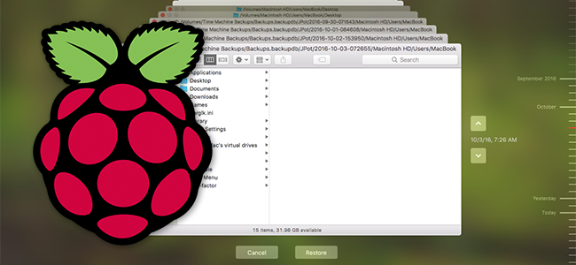
Why spend $300 on an AirPort Time Capsule when you can make one yourself with a Raspberry Pi and an external hard drive? It takes a little tweaking, but once it’s all set up, your Mac will back up automatically, without any effort on your part. No more having to plug a drive into your computer.
Even better: when it comes time to restore files, you can unplug the hard drive from the Pi and plug it directly into your Mac, allowing you to recover from a total system failure using System Recovery. Similar hacks do not work this way.
What You’ll Need
We’ve shown you how to back your Mac with Time Machine, and even how to perform Time Machine backups over the network. But in those tutorials, backing up over the network required another Mac acting as a server. So if you live in a single-Mac household, you might think your only option it to plug in a USB hard drive or buy a $300 Apple Time Capsule.
That’s not true. The Raspberry Pi connected to an external hard drive makes for a great improvised alternative to a Time Capsule or another Mac, and it’s much cheaper. (Yes, the Time Capsule does include router functionality, so it’s actually a decent price for what it offers–but this method lets you use whatever router you want, and offers more room for upgrades when your drive runs out of space.)
This tutorial assumes you already know the basics of how to set up a Raspberry Pi. It also requires a little bit of equipment:
- A Raspberry Pi. Any model will do, but the current model is the Raspberry Pi 3 Model B.
- An SD card, for the Raspberry Pi’s operating system. Older Raspberry Pis will use a standard SD card, while newer ones will require a microSD card, so make sure to get the right kind. Here’s a great list of cards tested to work well the Pi.
- A Power supply for the Pi. The Pis power port is just microUSB, but we recommend getting a power supply designed for the Pi for reliable performance–this one from CanaKit works well.
- A wired network connection for your Pi (you could use Wi-Fi, but it takes more setup and wired is going to be much better for those big over-the-network backups)
- An external hard drive, which you’ll connect to the Pi over USB. We recommend getting a desktop external hard drive with its own dedicated power supply, unless you have a USB-powered drive that’s been tested working with the Pi.
You can get most of this stuff (and more) in one fell swoop with a good Raspberry Pi starter kit like this one, or you can buy them separately. Your call.
I found out about this method from a blog post by Caleb Woods, and filled in a few things that didn’t work for me by reading this post on Badbox.de. My sincere thanks to both of you.
One final note: this hack works quite well in my experience, but at the end of the day it’s still just that: a hack. For this reason, I recommend having some sort of backup besides this, preferably something offsite. (You should always have an offsite backup anyway, in case of fire or other natural disaster.)
![]()
Step One: Prepare the External Drive for Time Machine
The first thing you need to do is prepare the external drive to work with Time Machine. Plug the drive into your Mac, then launch Disk Utility. Select your external drive, then click the “Erase” button. You’re going to want to format the drive as “Mac OS Extended”, also known as HFS+.
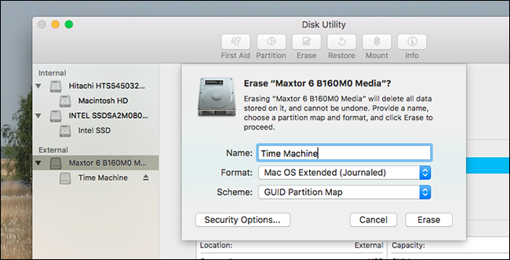
Next, we’re going to want to ensure that your Raspberry Pi, and every device, will have permission to control the drive. Head to the Finder, then right-click the drive in the sidebar. Click “Get Info”.
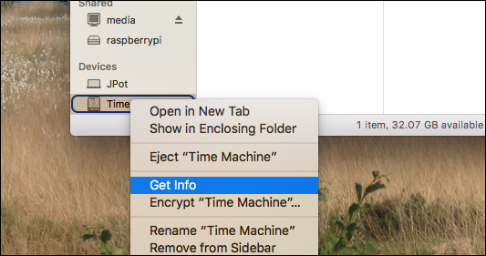
At the bottom of the window that opens, you’ll find the permission settings.
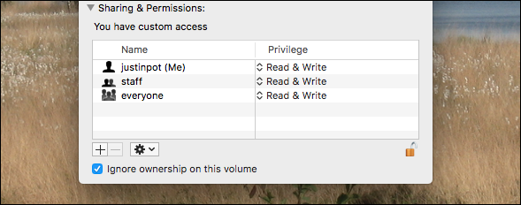
Click the lock at bottom right, then enter your password. Next, check “Ignore ownership on this volume.” And with that, you’re ready to connect your external drive to the Pi.
Step Two: Install Raspbian on Your Pi and Connect to It Over SSH
Next, you’ll need to set up your Raspberry Pi with Raspbian, as outlined in this article. We won’t detail the process here, since it’s a project in and of itself, so go check out that guide to get Raspbian set up on your Pi. I used Raspbian Core for my setup, as I’ve not connected the Pi to a display, but there’s no reason the full, GUI version of Raspbian wouldn’t also work.
Speaking of which: you have two choices when it comes to the rest of this tutorial. You could hook your Raspberry Pi up to a keyboard and monitor and set things up that way, or you can connect to your Pi over SSH and run every step from the comfort of your Mac. We think the SSH method is much easier than finding a random monitor, so here’s how to do that.
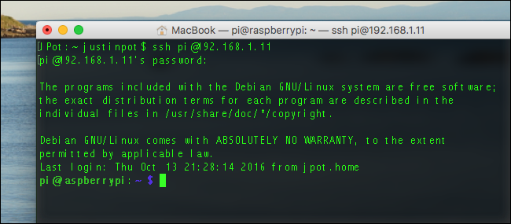
Launch the Terminal on your Mac, then enter the following command:
ssh pi@192.168.1.11
Replacing 192.168.1.11 with the IP address of your Pi. You can find the IP address of any device connected to your network, including your Raspberry Pi, by heading to your router’s web interface.
You’ll then be asked for a password for the default user, pi . The password for pi is, by default, raspberry .
If you’re connecting to a fresh system for the first time, I suggest you configure a few things before proceeding. First, run sudo raspi-config and change your default password. You can also expand your default filesystem here, if you have a large SD card (though this is not necessary for this tutorial.) Your Raspberry Pi will restart, at which point you’re ready to get to work.
Step Three: Mount Your External Drive
Before you can set up your Time Machine, you need to mount the drive so your Raspberry Pi can read and write to it. Doing this requires installing some software. First, make sure all the software on the Pi is up to date. Run these two commands, one after the other:
sudo apt-get update
sudo apt-get upgrade
Next, install two packages: hfsprogs and hfsplus. These will let your Raspberry Pi read your Mac-formatted drive.
sudo apt-get install hfsprogs hfsplus
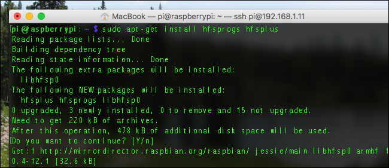
You now have software capable of mounting your drive, but it needs to know which drive to mount, so you’ll need to do some research. Start by launching Parted.
sudo /sbin/parted
Next, type print to see a list of currently connected drives. You should see your external drive here.
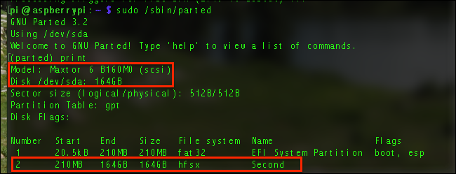
From this screenshot, we can see that my drive is a 164GB Maxtor drive (I’ll get a bigger one later, I promise.) The important bit of information here is /dev/sda. your drive will have a similar name, which you should write down.
Next, look at the table below that block of text. In my case, it’s obvious that the second, larger partition is what I’m looking for. Therefore, I make note that the partition I want to mount is sda2. You might need a slightly different figure, if you have more than one drive or more than one partition on your drive.
Now that you have the information you need, type quit and press Enter. Next, we’re going to make a folder that will serve as our mount point…
sudo mkdir -p /media/tm
…and then add some information to the fstab file. Use this command to open a text editor:
sudo nano /etc/fstab
Paste the following line into the document, replacing /dev/sda2 with your drive’s partition, if different from /dev/sda2.
/dev/sda2 /media/tm hfsplus force,rw,user,auto 0 0
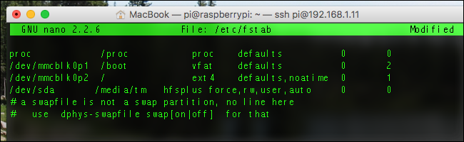
Once you’ve pasted the text, press Control+X to leave the editor, making sure to save when you do.
Then, mount the drive with:
sudo mount -a
If you don’t see an error message, congratulations! You’ve successfully mounted your drive.
Step Three: Compile and Install Netatalk
Netatalk is a piece of software that simulates AFP, the network protocol Apple currently users for Time Machine backups. You can install an ancient version of Netatalk using sudo apt-get install netatalk , but I highly recommend that you do not do that. For (largely political) complex reasons, Debian–which Raspbian is built on–offers a very outdated version of Netatalk in its repositories. You can kind of get Time Machine to work using this outdated version of Netatalk, but in my experience it’s frustrating.
So, I recommend you compile the latest version instead. It is more of a hassle to install, but it’s worth it.
First, you need to install the dependencies. Here’s everything you need to install, in one command:
sudo aptitude install build-essential libevent-dev libssl-dev libgcrypt11-dev libkrb5-dev libpam0g-dev libwrap0-dev libdb-dev libtdb-dev libmysqlclient-dev avahi-daemon libavahi-client-dev libacl1-dev libldap2-dev libcrack2-dev systemtap-sdt-dev libdbus-1-dev libdbus-glib-1-dev libglib2.0-dev libio-socket-inet6-perl tracker libtracker-sparql-1.0-dev libtracker-miner-1.0-dev
This might take a while to install. Next, download the latest version of Netatalk. As of this writing, that’s 3.1.10, though you may want to check netatalk’s home page to get the latest version number. Then, run this command to download it:
wget http://prdownloads.sourceforge.net/netatalk/netatalk-3.1.10.tar.gz
Replace the version number if you find a later version on their site.
Now, unpack the file you downloaded with:
tar -xf netatalk-3.1.10.tar.gz
Then switch to the new folder you just created.
cd netatalk-3.1.10
Next, you can configure all of netatalk’s settings before compiling the program, by using this command:
./configure \
--with-init-style=debian-systemd \
--without-libevent \
--without-tdb \
--with-cracklib \
--enable-krbV-uam \
--with-pam-confdir=/etc/pam.d \
--with-dbus-daemon=/usr/bin/dbus-daemon \
--with-dbus-sysconf-dir=/etc/dbus-1/system.d \
--with-tracker-pkgconfig-version=1.0
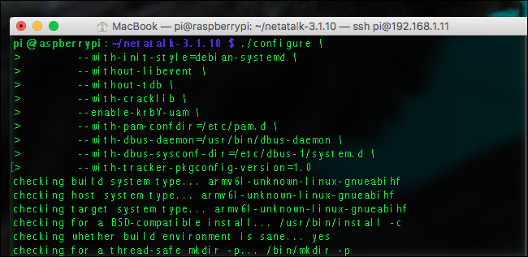
Assuming you don’t see any error messages, you can move on to the next stage and run:
make
This is going to take a while. You might as well make yourself a coffee, some scones, and a three course meal. A Raspberry Pi is not fast at compiling software.
When everything is done, you can finally install Netatalk:
sudo make install
Wasn’t that fun? Quickly check that Netatalk is actually running:
netatalk -V
You’ll see a bunch of information about your Netatalk setup. If everything looks good, let’s configure things!
Step Four: Configure Netatalk
Now that Netatalk is installed, you need to tell it to share your drive. First up, you’ll need to edit nsswitch.conf.
sudo nano /etc/nsswitch.conf
Here you need to add mdns4 and mdns to the line that starts with “hosts:”, so that it looks like this:
hosts: files mdns4_minimal [NOTFOUND=return] dns mdns4 mdns

This tweak means your Time Machine drive will show up in Finder’s sidebar as soon as you connect your Raspberry Pi to the network.
Next, you’ll need to edit afpd.service:
sudo nano /etc/avahi/services/afpd.service
Copy this block of text and paste it into that file:
<?xml version="1.0" standalone='no'?><!--*-nxml-*-->
<!DOCTYPE service-group SYSTEM "avahi-service.dtd">
<service-group>
<name replace-wildcards="yes">%h</name>
<service>
<type>_afpovertcp._tcp</type>
<port>548</port>
</service>
<service>
<type>_device-info._tcp</type>
<port>0</port>
<txt-record>model=TimeCapsule</txt-record>
</service>
</service-group>
Among other things, this information makes your Raspberry Pi mimic an actual Apple Time Capsule, complete with the appropriate icon.
Finally, it’s time to set up your external drive as a network share.
sudo nano /usr/local/etc/afp.conf
At the bottom of this document, paste the following text:
[Global]
mimic model = TimeCapsule6,106
[Time Machine]
path = /media/tm
time machine = yes
You can put a different name than “Time Machine” between the second brackets, if you want. This will change the name of the drive you back up to, as shown in Finder and Time Machine itself.
Finally, go ahead and launch the network services. In order, run these two commands:
sudo service avahi-daemon start
sudo service netatalk start
Your drive is now offered on the network. To make sure this happens every time you start up your Raspberry Pi, enter these commands, again, one after the other:
sudo systemctl enable avahi-daemon
sudo systemctl enable netatalk
We’re really close now!
Step Five: Connect to Your Time Machine
Head to the Finder on your Mac and you should see your Raspberry Pi here.
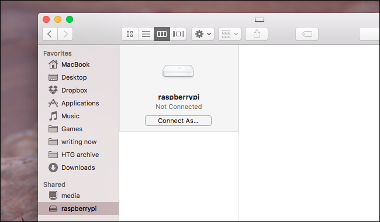
You can actually connect from here, by clicking “Connect As” and entering the same username and password you use to connect over SSH.
In my experience, however, Time Machine works better if you connect to the drive through its IP address, especially if you’ve set up static IP addresses with your router (which you probably should). To connect, open Finder, then hit Command+K on your keyboard.
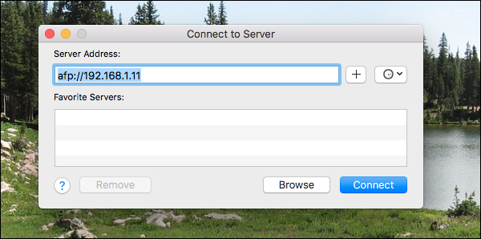
Once you’ve mounted the drive, head to System Preferences > Time Machine, then select the drive as your Time Machine backup.
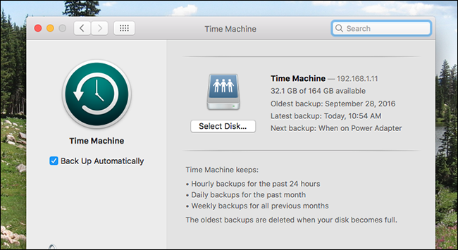
The initial backup will run, and after that backups will happen every hour. You now have a networked Time Machine drive. Enjoy!
![]()
![]()

![]()
![]()
![]()
![]()
![]()
![]()
A couple typos. Step Four:... "Here you need to add mdns4 and mans"
Should remove one of the 'enable' commands.
Thanks for this write up. Trying to mimic this for a Ubuntu VM with direct access to an HFS+ formatted drive. Not having success getting the Mac to connect to it once starting the service though.
Good catches! Fixing now.
Not sure how well this would work in a virtual machine, but please let me know if you get things working. I could do a generic Ubuntu version of this tutorial if there's enough interest.
Thanks a lot of the tutorial! I've been struggling to get this working and I was able to do the first backup today. Just a couple of observations that may help some people:
After mounting the Volume check the owner of the folder with ls -l /mediaIf it is different from the ssh user you may want to do (assuming the user is pi)sudo chown pi:pi /media/tm
Also, it is recommended to use the UUID for the automatic mounting in the fstab in case the disk number changes. So instead of /dev/sda you would have UUID="your-uuid" you can get it with the command sudo blkid
And the fstab would look like thisUUID="9c2f83c9-6ac7-3950-92c7-90b8ae89d45f" /media/tm hfsplus force,rw,user,auto 0 0
Thanks for the tutorial! I followed the guide step by step (I thought) but I am unable to connect to my pi IP on my mac. I keep getting an error stating "There are no shares available or you are not allowed to access them on the server."
Hey! That's weird, I wonder what's up. Does the Pi show up in Finder, even without attempting to connect via IP? Are you prefexing the IP with afp://, like in the screenshot?
I did end up getting it to work with a Ubuntu VM. Using Netatalk's wiki helped. Recorded the process here: https://thatvirtualboy.com/2016/11/03/send-time-machine-backups-to-a-vm-hosted-in-windows/
This is really cool! Let me know if it works for you long-term.
What I'd really like to do at some point is get this working in Windows 10's version of Bash. It seems like a pipe dream now but I'll keep looking into it.
Will do! Would be great to use Windows' native bash somehow. Been a long time reader of HTG - keep up the great work!
Looks like I had a typo when setting up my external drive as a network share. The path for [Time Machine] was incorrect. Got it working now! Thanks!
Glad you got it working!